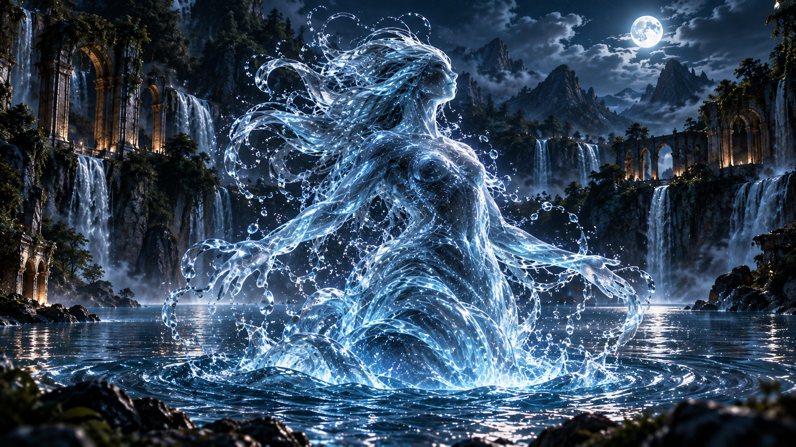
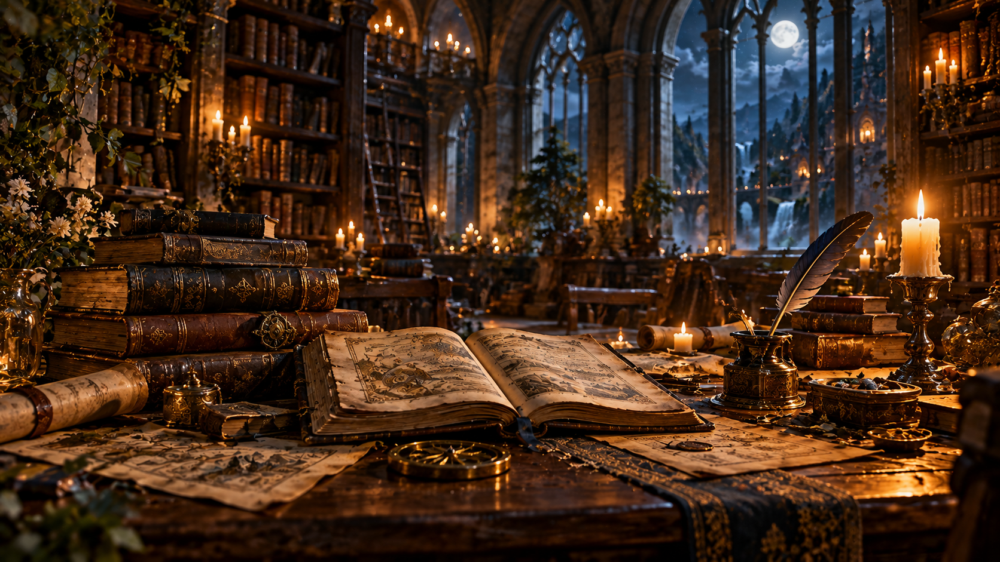
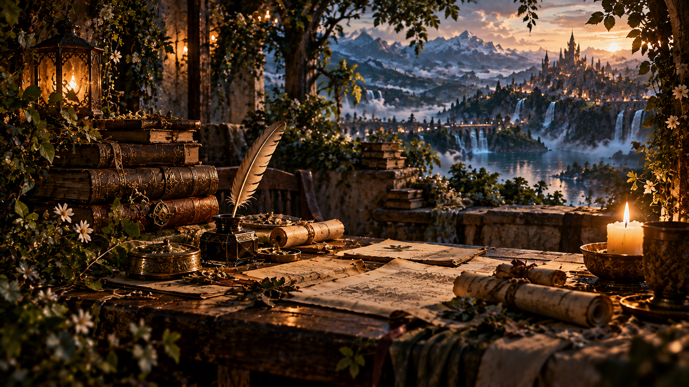

A História
Uma antiga história começa a despertar entre os reinos. Segredos esquecidos, alianças improváveis e forças ancestrais conduzem os personagens por caminhos que jamais imaginaram percorrer.

Onde antigos reinos guardam segredos, espíritos caminham entre os homens e o destino nasce entre a terra, a floresta e o mar.
Há lugares que existem além das fronteiras que conhecemos. Reinos escondidos, espíritos ancestrais e histórias que atravessaram gerações aguardam aqueles que ousam entrar.
“Algumas histórias começam muito antes de seus protagonistas descobrirem que fazem parte delas.”
— Entre a Floresta e as ÁguasUma antiga história começa a despertar entre os reinos. Segredos esquecidos, alianças improváveis e forças ancestrais conduzem os personagens por caminhos que jamais imaginaram percorrer.
Príncipes, espíritos e habitantes dos diferentes reinos possuem suas próprias histórias, desejos e segredos.

Um mundo dividido entre diferentes forças da natureza, onde florestas antigas, montanhas, águas e territórios misteriosos formam um universo vivo.

Abra as páginas e descubra os capítulos de Entre a Floresta e as Águas.

Este universo está sendo construído com carinho, entre histórias, personagens e muitas ideias.

Se você gosta deste universo e quer acompanhar seu desenvolvimento, fique por perto.
Novas histórias ainda estão por vir.